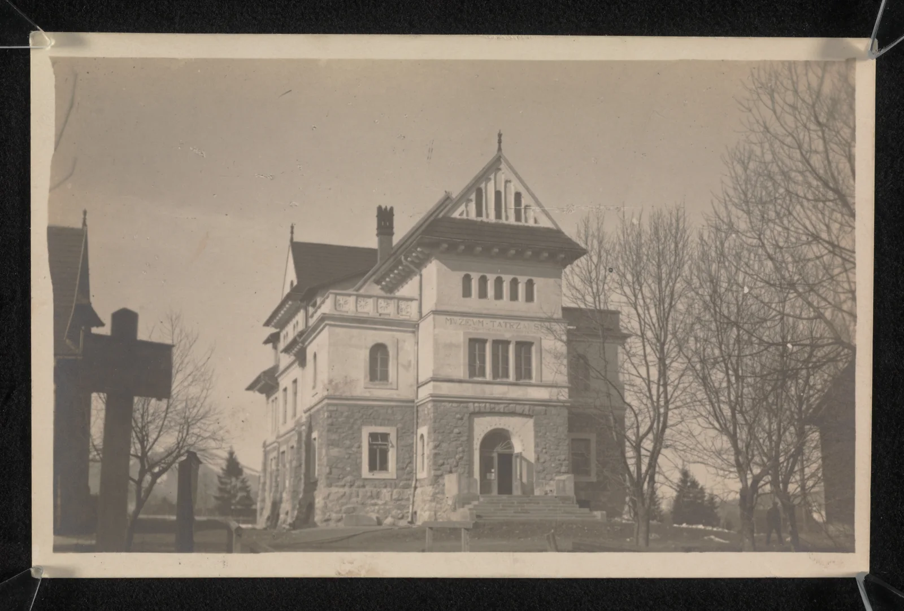
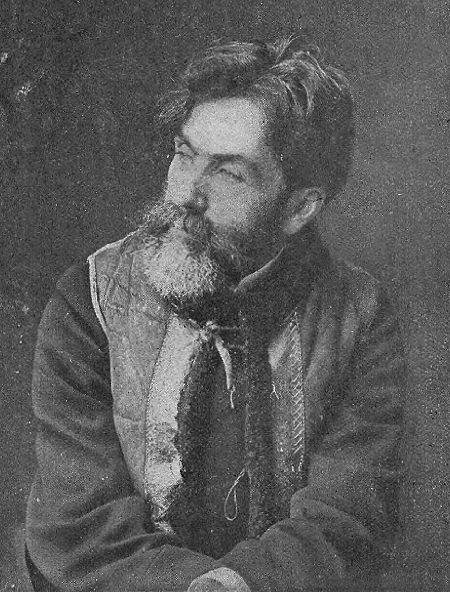
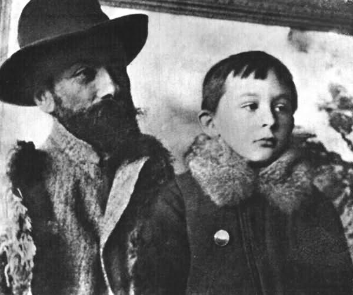
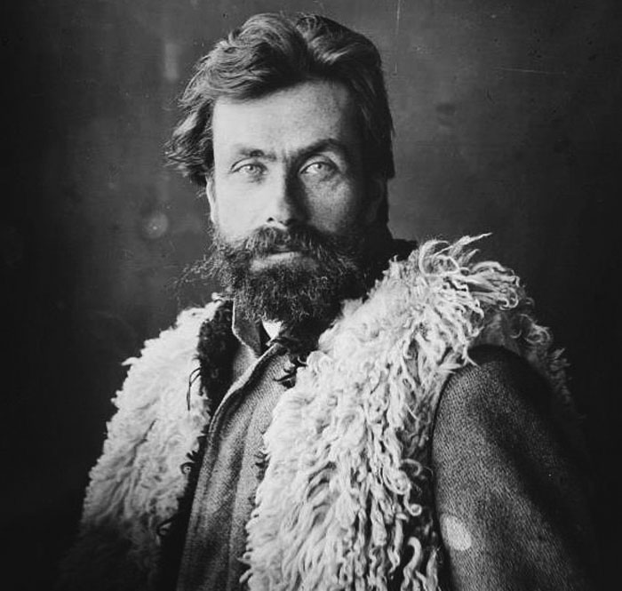

Szlak Witkiewicza
Mapa nie mogła się wczytać. Sprawdź internet. Przystanki i nagrania znajdziesz na liście.

PRZYSTANEK 01 / 11
Muzeum Tatrzańskie
Krupówki · centrum ZakopanegoWłącz lokalizację. Przy przystanku nagranie wystartuje automatycznie.

Człowiek,
który wymyślił
Zakopane.
STANISŁAW WITKIEWICZ
Człowiek, który
wymyślił Zakopane
Sześć rozdziałów życia.
Jedna historia, do której możesz wracać.
Rozdziały
Twój postęp zapisuje się na tym urządzeniuZ ALBUMU WITKIEWICZA
Człowiek za opowieścią.
Fotografia opublikowana w „Nowościach Illustrowanych”, 1915.
Źródło · domena publiczna
Ze Stanisławem Ignacym, około 1893 roku. Zbiory Muzeum Tatrzańskiego.
Źródło · domena publiczna
Fotografia ze zbiorów Muzeum Tatrzańskiego.
Źródło · domena publicznaZABIERZ OPOWIEŚĆ ZE SOBĄ
Szlak Witkiewicza
Jedenaście miejsc, jedenaście historii. Wybierz przystanek, przy którym jesteś, lub zaplanuj własny spacer.
Centrum → wille → Jaszczurówka i Kalatówki. To punkty do odkrywania, nie jeden krótki spacer.
WARSZTAT TURNIE
Historie zapisane
w miejscach.
TURNIE łączy opowieść do słuchania z miejscami, które możesz odwiedzić. Bohaterem pierwszej serii jest Stanisław Witkiewicz — malarz, pisarz i twórca stylu zakopiańskiego.
Skąd te historie?
Podstawą projektu są listy, pamiętniki Towarzystwa Tatrzańskiego, dawna prasa, katalogi zabytków i opracowania historyczne. Rozbudowana baza projektu odróżnia fakty potwierdzone, informacje do sprawdzenia i legendy.
Wersja demonstracyjna
Projekt portfolio: strona opowieści, audiobook i mobilny audioprzewodnik. Możesz swobodnie obejrzeć mapę i posłuchać nagrań. Tryb spaceru jest prototypem wymagającym sprawdzenia w terenie.
Twoje słuchanie
Odtwarzacz pamięta miejsce odsłuchu w tej przeglądarce. Przycisk pobierania przy odcinku zapisuje plik MP3 na urządzeniu — możesz słuchać go później we własnym odtwarzaczu.
Archiwalia
Fotografie i reprodukcje pochodzą z istniejącego archiwum TURNIE. Ornamenty są przerysami podhalańskiej snycerki. Szczegółowy katalog materiałów znajduje się w bazie projektu.
Zdjęcie willi Oksza: Andrzej Otrębski / Wikimedia Commons, CC BY-SA 4.0. Fotografia z 2017 r.; pomniejszona na potrzeby aplikacji.